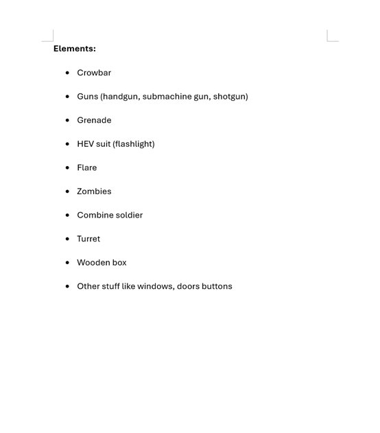
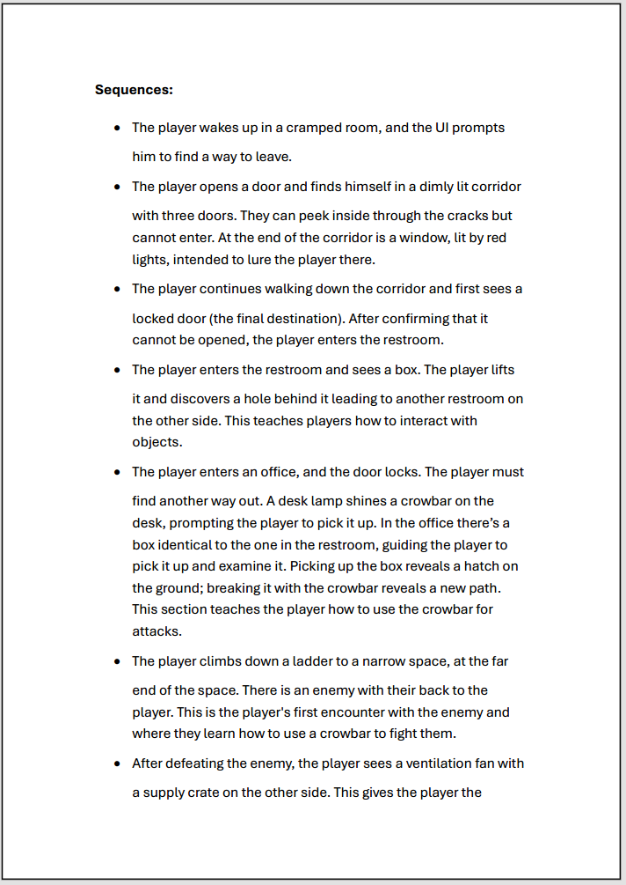
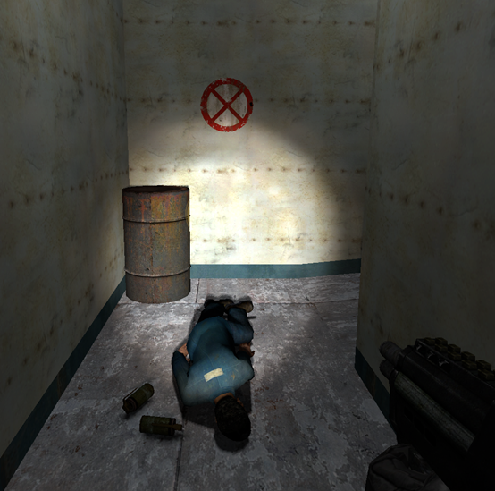
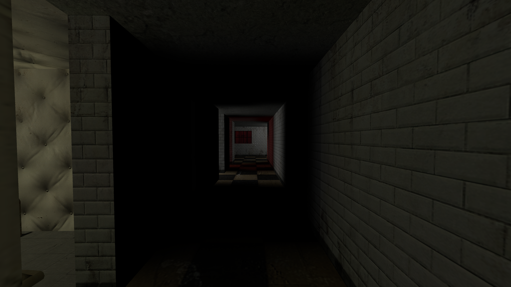

Level Design
Escape-01
Half-Life 2 Mod — A level focused on multiple routes and player approaches to reach the objective.
Role
Level Design
Tools
Hammer Editor
Status
Completed
Focus
Multiple Routes / Multiple Approaches
Credits
Individual Project
Download
LinkOverview
This project is a Half-Life 2 mod featuring a level focused on multiple routes and approaches, allowing different ways to reach the objective, with player choices leading to different situations and outcomes.
Design Goal
The goal of this level is to create a 5–8 minute Half-Life 2 experience based on the theme of “escape,” using the game’s physics system to design puzzles and its existing enemies to create combat scenarios, while supporting multiple routes to complete the level.
Design Process
1
List Available Elements

After defining the design goal, I first identify relevant elements to understand what resources and assets are available. Since the level focuses on multiple routes, this step explores how each path can be differentiated. Variations are introduced through rewards and difficulty. For example, different routes may offer different rewards, not only in quantity but also by granting access to new items earlier. Routes are also designed to vary in difficulty, influenced by factors such as enemy count, enemy types, and combat intensity.
2
Sequences

At this stage, I map out the player's moment-to-moment experience throughout the level. The sequence defines how players progress, where key decisions happen, and how pacing shifts between exploration and combat. The sequence is designed around the theme of escape, as well as the intended balance between combat and exploration, and the presence of multiple routes. Early stages focus on teaching the player core interactions and combat. As the level progresses, hidden elements within the environment are gradually introduced, encouraging players to actively explore and discover alternative ways to progress.
Questioning & Idea Development
When writing the sequence, I question my current ideas and try to answer them. If a question cannot be answered or the solution seems impractical, I explore alternative sequences to test different approaches. During this process, I also note down any interesting ideas that emerge, as they may be useful later in the design.
3
Layout Sketches
At this stage, I translate the sequence into rough layout sketches on paper, defining the overall structure of the level, including spatial layout and enemy placement. For this project, the sketches are used to evaluate how well the multiple routes function within the space. This includes checking whether hidden paths feel appropriately placed and not too distant from the main flow. The layout is also used to position hidden supplies in a way that attracts player attention through spatial arrangement. Additionally, I consider how different routes converge back toward the same final destination, ensuring a coherent progression regardless of player choice. Enemy placement is planned alongside the layout, including the positioning of cover to support combat encounters.
4
Implementation and Iteration
At this stage, the level is implemented in-engine based on the layout sketches, with continuous iteration throughout the process. During implementation, the spatial scale is tested and adjusted, as layouts that appear reasonable in sketches may feel too large or too small in practice. Enemy behavior is also evaluated to ensure it aligns with the intended design. When certain behaviors become too complex to implement, alternative solutions are considered to achieve a similar gameplay effect. The feasibility of designed mechanics is tested as well. For example, interactions such as triggering doors with switches are implemented when possible, or replaced with alternative solutions if needed. Finally, the intended player experience defined in the sequence is validated in practice, ensuring that pacing, progression, and interactions function as expected. During iteration, I also look at other games and references to see how similar problems are approached, identifying ideas and techniques that can be adapted into my own design.
Some design approaches
Guiding Through Lighting
Lighting is used as a guiding tool to direct the player’s attention throughout the level. It highlights hidden areas, guides where the player should look, and subtly suggests the direction of progression. In several moments, brighter or more focused lighting is used to draw attention to points of interest, encouraging exploration without relying on explicit instructions.
Misdirection
Misdirection is also used to guide the player’s attention toward one point of interest while subtly revealing another. For example, armor pickups are used to draw attention toward hidden ventilation paths, while supply crates encourage players to climb over fences, leading them to discover hidden hatches from a higher vantage point. This creates a layered discovery process driven by player interaction.
Environmental Storytelling

Environmental storytelling is used to communicate information about the space and foreshadow danger. Elements such as corpses and warning marks suggest that previous encounters have occurred, indicating that the area ahead may be unsafe.Items found near these corpses also hint at what tools or strategies may be useful for the upcoming challenge. This prepares the player for combat while encouraging more cautious behavior, without the need for explicit guidance.



Reflection
Through this project, I realized that building a playable level takes significantly more time than initially expected. This is partly due to technical challenges during implementation, such as incorrect scale, lighting issues, and unexpected enemy behavior. However, a more important factor was the tendency to continuously introduce new ideas during development. To address this, I learned the importance of defining a clear plan based on the design goal and sticking to it as much as possible, even when new ideas emerge. Another challenge was difficulty balancing. Feedback from playtesting indicated that the level was too difficult. Upon reflection, I found that the main issue was the lack of a structured approach to difficulty design. If I were to improve this, I would assign a value to each enemy based on difficulty, and use the total value within a given area as a reference point. While this may not guarantee a perfectly balanced experience, it would help avoid drastic difficulty spikes.
Playable Build
How to Play
This level is provided as a .bsp file.
Place the file into:
Steam\steamapps\common\Half-Life 2\hl2\maps
Then launch Half-Life 2 and type:
map escape_01
in the console.